Mỗi nhiệm vụ trình bày theo mạch: Mục tiêu → Quá trình thực hiện → Sản phẩm & minh chứng → Phân tích → Link tải báo cáo PDF.
Thành thạo các thao tác cơ bản với tệp tin và thư mục trên Windows: tạo – đổi tên – sao chép – di chuyển – xoá – xoá vĩnh viễn – khôi phục, đồng thời xây dựng quy tắc đặt tên và tổ chức dữ liệu khoa học.
Tôi thực hiện trọn vòng đời của một tệp tin trong thư mục thực hành đặt theo tên cá nhân ThucHanh_PhamMinhDung trên ổ D: (ổ không phải ổ hệ thống, để tách dữ liệu khỏi ổ C:). Quy trình gồm 13 bước, mỗi bước có ảnh chụp màn hình minh chứng:
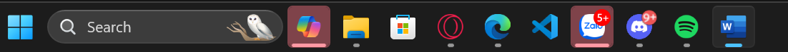
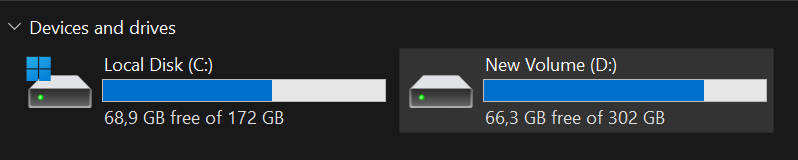
New Volume (D:) thay vì ổ hệ thống C:.ThucHanh_PhamMinhDung (New → Folder).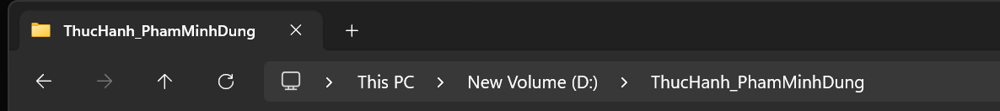
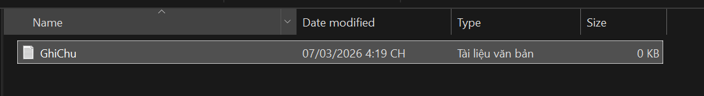
GhiChu.txt (New → Text Document).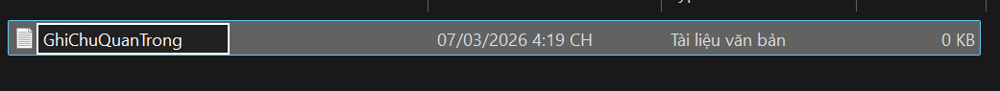
GhiChuQuanTrong.txt (Rename).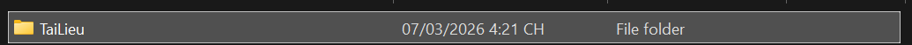
TaiLieu bên trong.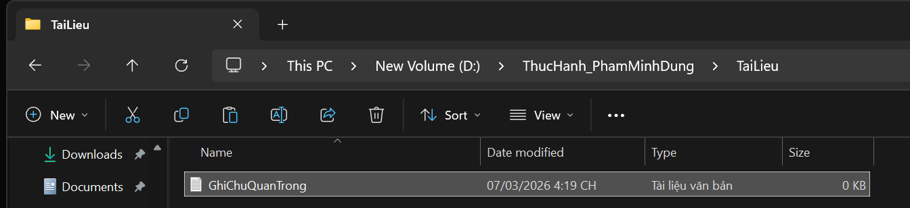
TaiLieu (Copy & Paste / Ctrl+C, Ctrl+V).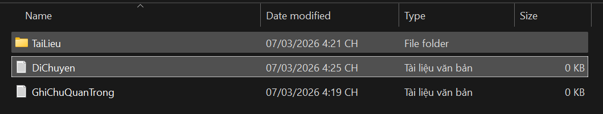
DiChuyen.txt để minh hoạ thao tác di chuyển.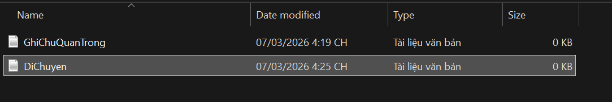
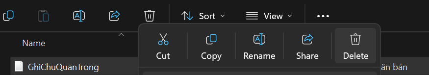
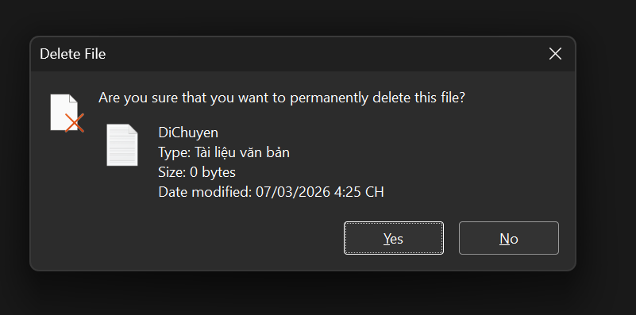
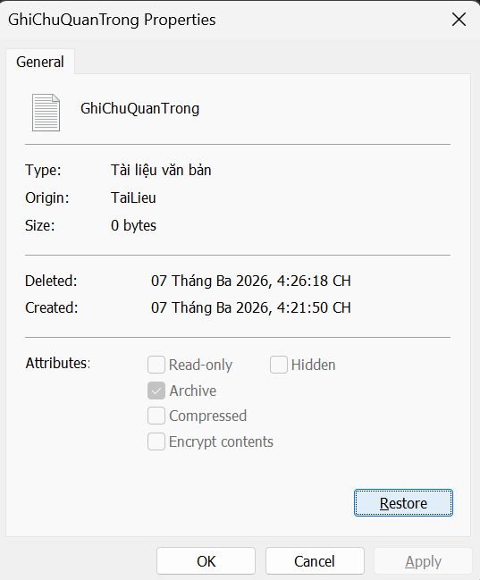
Quy tắc đặt tên: tôi đặt tên thư mục theo cấu trúc “ThucHanh_<Tên>” và tên tệp gợi ý nội dung (GhiChuQuanTrong, DiChuyen), không dấu cách và viết hoa đầu từ (PascalCase) để tránh lỗi đường dẫn và dễ tìm kiếm. Tổ chức dữ liệu: đặt dữ liệu thực hành ở ổ D: nhằm tách khỏi ổ hệ thống, dùng thư mục con (TaiLieu) để phân loại — đây là tư duy phân cấp giúp mở rộng về sau.
Hiểu sâu về cơ chế xoá: qua bài này tôi phân biệt rõ ba mức độ — Delete (đưa vào Thùng rác, có thể khôi phục), Shift + Delete (xoá vĩnh viễn, bỏ qua Thùng rác) và Restore (khôi phục về đúng vị trí cũ). Việc nắm cơ chế này giúp tránh mất dữ liệu ngoài ý muốn và biết cách cứu dữ liệu khi cần.
Tìm kiếm có hệ thống, tổng hợp và đánh giá độ tin cậy của nguồn học thuật theo 5 tiêu chí: tác giả, cơ quan xuất bản, phương pháp, lượng trích dẫn và tính cập nhật. Nhiệm vụ gồm hai báo cáo tổng quan tài liệu ở hai lĩnh vực khác nhau.
Báo cáo A — “Phát triển phần mềm hỗ trợ bởi AI”: tìm trên Google Scholar, IEEE Xplore, ACM Digital Library, arXiv và O’Reilly; tổng hợp 10 tài liệu rồi chấm điểm tin cậy (thang 1–5). Báo cáo B — “Ảnh hưởng của vi nhựa đến hệ sinh thái biển”: dùng công cụ AI học thuật Consensus để trích xuất và so sánh kết quả từ 5 bài báo khoa học.
Từ khoá tiêu biểu: "AI pair programming", "large language models for code", "GitHub Copilot impact", "generative AI software engineering". Kết hợp các toán tử nâng cao để lọc kết quả:
site:, filetype:. Để đạt mức cao của tiêu chí “sử dụng linh hoạt ≥4 toán tử”, bạn nên chụp thêm 1–2 ảnh thao tác tìm kiếm có dùng toán tử và đặt vào images/.| # | Loại nguồn | Tiêu đề & Tác giả (Năm) | Nhận xét theo 5 tiêu chí (tác giả · nơi xuất bản · phương pháp · trích dẫn · cập nhật) | Hạng |
|---|---|---|---|---|
| 1 | Tạp chí/Hội nghị | The Impact of AI on Developer Productivity: Evidence from GitHub Copilot — Peng, S. et al. (2023) | Microsoft Research/GitHub Next · arXiv, đã được nhận tại ICSE 2024 · thực nghiệm 95 lập trình viên có nhóm đối chứng · >500 trích dẫn · rất mới. | 5 |
| 2 | Hội nghị | A Survey of LLMs for Code… — Xu, F. et al. (2024) | ĐH Peking & MSRA · ACM FSE 2024 · tổng quan >300 bài · mới nên ít trích dẫn nhưng uy tín · rất mới. | 5 |
| 3 | Tạp chí | An Empirical Study of Security Risks in AI-Generated Code — Pearce, H. et al. (2022) | UNSW & CSIRO Data61 · ACM TOSEM · phân tích >1.600 chương trình · >200 trích dẫn · khá cao. | 5 |
| 4 | Sách chuyên khảo | The Developer's Playbook for LLMs — Wilson, S. (2024) | Kỹ sư trưởng Google · O'Reilly Media · đúc kết pattern thực tiễn · đánh giá chuyên môn cao · rất mới. | 4 |
| 5 | Hội nghị | “It's Weird That It Knows What I Want”… — Prather, J. et al. (2023) | ĐH Abilene Christian, UBC · ACM CHI · nghiên cứu định tính, phỏng vấn sâu · >150 trích dẫn · cao. | 5 |
| 6 | Preprint (arXiv) | Is AI-Generated Code Actually Secure?… — Khan, A. et al. (2023) | ĐH Stanford & Toronto · arXiv (chưa peer-review) · thực nghiệm đánh giá mô hình · ~80 trích dẫn · cao. Cần thận trọng khi trích dẫn. | 3 |
| 7 | Tạp chí (SCIE) | AI in Software Engineering: A Systematic Literature Review — Nguyen, T. et al. (2021) | ĐHBK Hà Nội & ĐH Nagoya · Information and Software Technology (Elsevier) · SLR · >400 trích dẫn · trung bình (chưa có LLM mới). | 4 |
| 8 | Blog công ty | Quantifying GitHub Copilot's impact… — GitHub Next (2022) | GitHub Next Team · GitHub Blog · nghiên cứu nội bộ, không peer-review · được nhiều bài trích như nguồn sơ cấp · trung bình. Có tính chủ quan. | 3 |
| 9 | Sách chuyên khảo | Deep Learning for Coders — Howard, J. & Gugger, S. (2020) | Jeremy Howard (fast.ai) · O'Reilly · hướng dẫn thực hành · best-seller · cũ (2020) nhưng đã có bản cập nhật. | 4 |
| 10 | Workshop | Automatic Code Generation using Pre-trained LMs… — Ziegler, A. et al. (2022) | ĐH Stuttgart · Int. Workshop on AI & SE · đánh giá hiệu năng Copilot · ~100 trích dẫn · khá (workshop ít khắt khe hơn hội nghị chính). | 4 |
| # | Bài báo (Tác giả, Năm) | Phương pháp | Đối tượng & cỡ mẫu | Kết quả chính |
|---|---|---|---|---|
| 1 | Microplastic ingestion causes intestinal damage in European sea bass (Smith et al., 2021) | Phơi nhiễm in vivo 30 ngày | 150 cá chẽm châu Âu (giai đoạn cá bột) | Viêm ruột, giảm 15% tốc độ sinh trưởng, thay đổi hệ vi sinh đường ruột. |
| 2 | Impacts of polystyrene microplastics on the reproduction of marine copepods (Chen et al., 2020) | Nuôi cấy, quan sát độc tính 14 ngày | 500 cá thể chân kiếm (Copepods) | Giảm 30% tỷ lệ đẻ trứng, giảm tỷ lệ sống của ấu trùng. |
| 3 | Bioaccumulation of polyethylene microplastics in Pacific oysters (Nguyen et al., 2022) | Phân tích mô học, đo stress oxy hoá | 120 con hàu Thái Bình Dương | Tích tụ trong tuyến tiêu hoá, tổn thương mô, tăng ROS. |
| 4 | Trophic transfer of microplastics in a marine food web (Garcia et al., 2019) | Mô phỏng chuỗi thức ăn trong bể | 3 bậc dinh dưỡng mô phỏng | Vi nhựa chuyển giao & phóng đại sinh học qua các bậc, tích tụ ở gan cá. |
| 5 | Prevalence of microplastics in wild-caught sardines (Rossi et al., 2023) | Thực địa, phân tích quang phổ FTIR | 300 mẫu cá mòi tự nhiên | 68% mẫu có vi nhựa trong dạ dày; mật độ tương quan nghịch với thể trạng cá. |
Về đánh giá nguồn: các bài đăng ở ACM/IEEE hoặc tạp chí SCIE (số 2, 3, 5, 7) đạt độ tin cậy cao nhất nhờ quy trình phản biện nghiêm ngặt; bản preprint arXiv (số 6) tuy mới nhưng cần kiểm chứng; blog công ty (số 8) có dữ liệu thực tế giá trị nhưng mang tính chủ quan, không thay thế nghiên cứu độc lập. Tính cập nhật là yếu tố then chốt với lĩnh vực AI: ưu tiên nguồn 2023–2024.
Về tổng hợp khoa học (Báo cáo B): cả 5 nghiên cứu đều cho thấy vi nhựa gây hại cho sinh vật biển; đáng lo nhất là khả năng “chuyển giao dinh dưỡng” qua chuỗi thức ăn, tiềm ẩn rủi ro cho con người. Việc dùng Consensus giúp trích xuất nhanh nhưng tôi vẫn đối chiếu lại tên tác giả, năm và kết quả để bảo đảm chính xác.
Phát triển kỹ năng viết prompt để khai thác tối đa mô hình ngôn ngữ lớn trong học tập, qua việc so sánh prompt ở 3 cấp độ (Cơ bản → Cải tiến → Nâng cao) trên 3 tác vụ học thuật phổ biến.
Tôi thử nghiệm 3 tác vụ — tóm tắt tài liệu, giải thích khái niệm khó (OOP), tạo bộ câu hỏi ôn tập — mỗi tác vụ viết 3 phiên bản prompt và so sánh chất lượng đầu ra.
Cơ bản: “Tóm tắt tài liệu này giúp tôi.”
Cải tiến: “…thành 5 ý chính, giữ thuật ngữ quan trọng.”
Nâng cao: “Bạn là trợ giảng đại học. Tóm tắt theo cấu trúc: mục tiêu, phương pháp, kết quả, kết luận, từ khoá.”
Cơ bản: “Giải thích OOP là gì.”
Cải tiến: “Giải thích OOP đơn giản, có ví dụ Java.”
Nâng cao: “Bạn là giảng viên Java. Giải thích OOP gồm định nghĩa, 4 tính chất, ví dụ, lỗi thường gặp.”
Cơ bản: “Tạo câu hỏi ôn tập Java.”
Cải tiến: “Tạo 10 câu về String, ArrayList, HashMap, Exception.”
Nâng cao: “Bạn là người ra đề thi Java. Tạo 10 câu theo 3 mức độ, có đáp án và giải thích.”
| Tác vụ | Prompt cơ bản | Prompt cải tiến | Prompt nâng cao |
|---|---|---|---|
| Tóm tắt | Ngắn | Đủ ý | Có cấu trúc học thuật |
| Giải thích | Khái quát | Có ví dụ | Có chiều sâu + lỗi thường gặp |
| Ôn tập | Chung chung | Đa dạng | Phân mức độ + đáp án |
Prompt nâng cao luôn cho kết quả tốt nhất vì áp dụng các kỹ thuật prompt engineering: role prompting (gán vai “giảng viên/trợ giảng/người ra đề”), chain-of-thought định hướng theo từng bước, few-shot/định dạng đầu ra cụ thể (bảng, gạch đầu dòng). Khi prompt xác định rõ vai trò – bối cảnh – định dạng – phạm vi, mô hình bám sát yêu cầu và giảm trả lời chung chung.
[Vai trò] + [Bối cảnh/đối tượng] + [Nhiệm vụ cụ thể] + [Định dạng đầu ra] + [Ràng buộc/ví dụ mẫu]. Luôn thử nhiều phiên bản, so sánh và lưu lại prompt tốt theo từng môn để tái sử dụng.
Đánh giá cách bộ công cụ cộng tác hỗ trợ hoàn thành một dự án phần mềm nhóm, làm rõ vai trò cá nhân, các thách thức khi làm việc từ xa và giải pháp.
Trong dự án phát triển phần mềm theo hướng OOP, tôi đảm nhận phần logic (backend) và xây dựng cấu trúc lớp. Nhóm thống nhất dùng ba công cụ thuộc ba nhóm chức năng:
“Trụ sở” trao đổi nhanh, họp voice, share màn hình fix lỗi. Tôi lập các kênh #code-review, #general-chat, #meeting-room và kênh Urgent cho việc khẩn.
Viết tài liệu SRS, thiết kế thuật toán, báo cáo chung. Tôi phụ trách phần “Kiến trúc hệ thống” & “Hướng dẫn cài đặt Java” — Version History ghi nhận hơn 20 lượt chỉnh sửa của tôi.
Lưu mã nguồn, sơ đồ UML, thư viện Java. Cấu trúc thư mục: Dự_án_OOP › Source_Code / Documents / Diagrams / References.
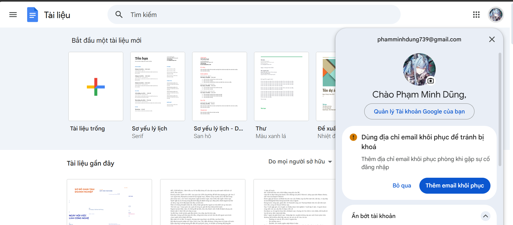
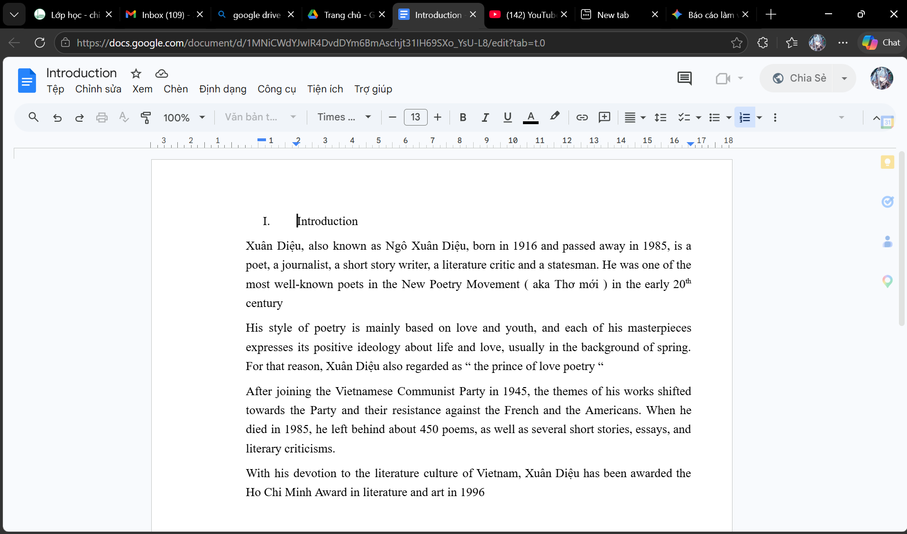
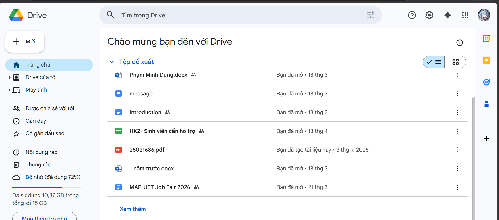
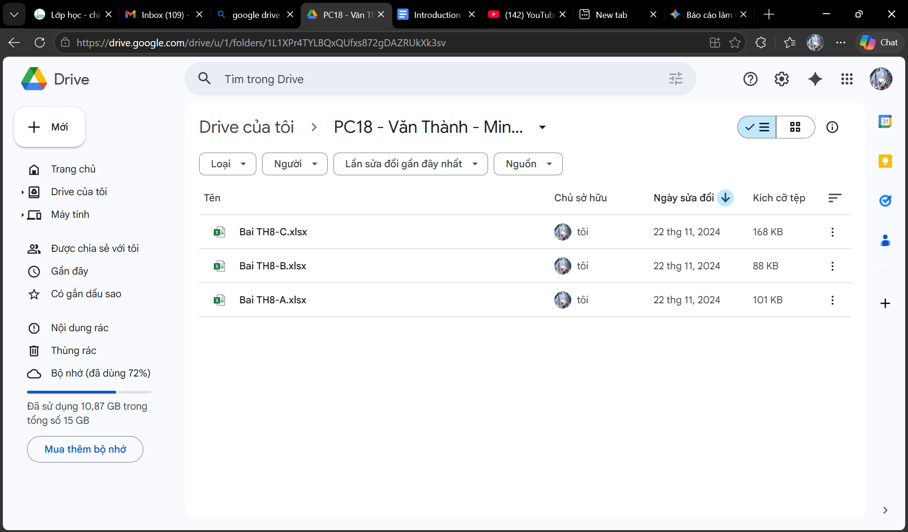
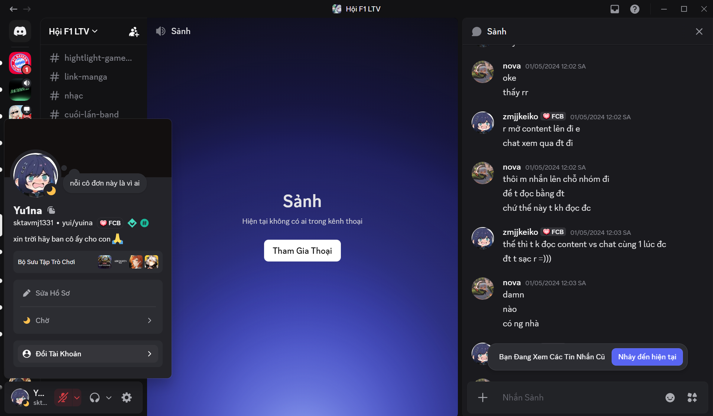
• Xung đột nội dung khi cùng sửa một phần trên Google Docs (ghi đè nhau).
• Lệch giờ sinh hoạt → phản hồi trên Discord chậm.
• Khó giải thích khái niệm trừu tượng (Đa hình – Polymorphism) qua tin nhắn.
• Quy tắc: tag người phụ trách trước khi sửa phần quan trọng.
• Lập kênh Urgent bắt buộc bật thông báo.
• Họp voice + share screen 10 phút thay vì nhắn tin dài → hiệu quả tăng rõ rệt.
Việc dùng thành thạo cả ba công cụ giúp dự án hoàn thành đúng hạn và rèn tư duy làm việc chuyên nghiệp. Bài học lớn nhất: công cụ chỉ là phương tiện; yếu tố quyết định là quy trình làm việc rõ ràng và sự chủ động trong giao tiếp. Hướng cải tiến: học thêm Git để quản lý phiên bản mã nguồn chuyên sâu.
YYYYMMDD_Version_YenLinh” — chữ “YenLinh” có thể là tên còn sót từ bản mẫu. Hãy đổi thành tên của bạn (vd. YYYYMMDD_Version_Dung) trong file Word.Sản xuất một sản phẩm truyền thông số giáo dục — Infographic “Tương lai của OOP & Thiết kế hệ thống trong kỷ nguyên AI” — bằng cách phối hợp ít nhất 3 công cụ AI thuộc 3 nhóm: tạo văn bản, tạo hình ảnh và hỗ trợ thiết kế.
| Phân loại | Công cụ | Mục đích sử dụng |
|---|---|---|
| AI tạo văn bản | Google Gemini & ChatGPT-4 | Xây dựng đề cương, biên soạn nội dung chuyên môn, so sánh định nghĩa kỹ thuật. |
| AI tạo hình ảnh | Midjourney (v6) | Tạo hình minh hoạ trừu tượng về cấu trúc dữ liệu, mô hình robot lập trình. |
| AI hỗ trợ thiết kế | Canva AI (Magic Design) | Tự động hoá bố cục, phối màu, sắp xếp thành phần đồ hoạ hiện đại. |
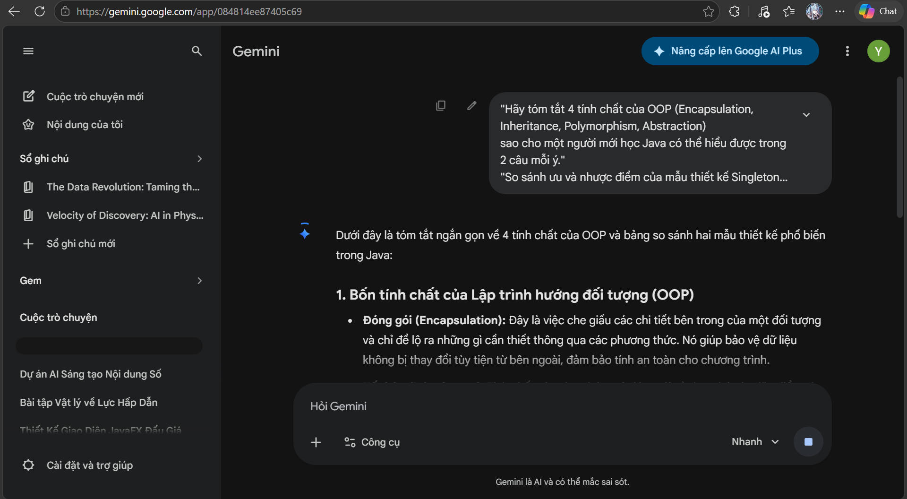
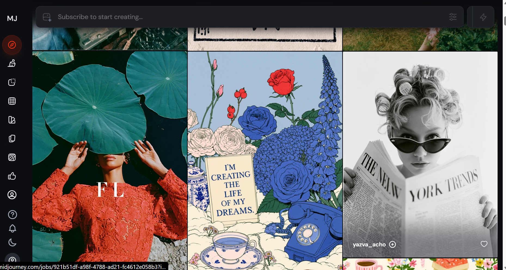
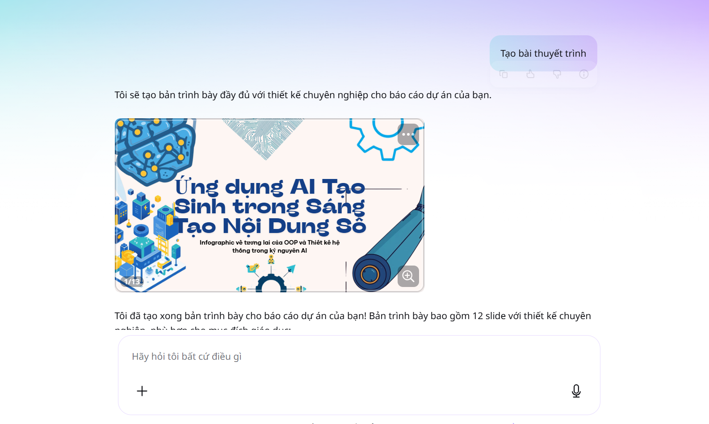
Prompt Midjourney tiêu biểu: “A high-tech digital tree representing Java Class Inheritance, neon blue lines, cinematic lighting, 8k resolution --ar 16:9”.
AI giúp tăng tốc 3–4 lần ở khâu sinh ý tưởng, nội dung thô và hình ảnh. Phần cá nhân là khâu điều phối: chọn lọc, biên tập lại nội dung cho đúng & dễ hiểu, cắt bỏ chữ vô nghĩa (gibberish) trong ảnh Midjourney, kiểm chứng kiến thức và quyết định bố cục cuối cùng. Vai trò của tôi chuyển từ “người thợ” sang “Content Orchestrator” theo vòng lặp: Prompt → Kiểm tra → Tinh chỉnh → Kết hợp.
Ưu điểm: tốc độ cao, vượt “nỗi sợ trang giấy trắng”. Hạn chế: AI có hiện tượng “ảo giác” (hallucination) — đôi khi sinh mã Java sai logic hoặc hình ảnh lỗi chi tiết. Vì vậy tôi luôn kiểm chứng chéo với giáo trình chính thống (vd. Kenneth Rosen) và ghi rõ phần nào có AI hỗ trợ. Kết luận: AI là “cộng sự” quyền năng chứ không thay thế con người.
Phân tích chính sách dùng AI trong học thuật, thực hành một nhiệm vụ học thuật có AI hỗ trợ rồi đánh giá – chỉnh sửa, và đúc kết bộ nguyên tắc cá nhân về sử dụng AI có trách nhiệm.
(1) Phân tích chính sách: tổng hợp khung hướng dẫn dùng AI tại các đại học lớn ở Việt Nam (ĐHQGHN, ĐHQG TP.HCM, ĐHBK Hà Nội) theo 3 trục: mức độ cho phép, yêu cầu bắt buộc, trách nhiệm nội dung. (2) Thực hành: nhiệm vụ “so sánh thuật toán Dijkstra & A*” có AI hỗ trợ. (3) Đánh giá & sửa: phát hiện AI sai về lý thuyết (độ phức tạp không gian A* trong trường hợp xấu nhất) và lỗi logic Priority Queue gây vòng lặp vô hạn → tự tái cấu trúc mã, bổ sung mảng visited và phân tích các trường hợp biên. (4) Trích dẫn minh bạch theo chuẩn APA 7th.
| Tiêu chí | Nội dung chính sách tiêu chuẩn | Chế tài vi phạm |
|---|---|---|
| Mức độ cho phép | Hỗ trợ tìm ý tưởng, kiểm tra cú pháp/mã, dịch thuật, cấu trúc hoá đề cương. | Cảnh cáo/huỷ kết quả nếu tỷ lệ “AI-generated” vượt ngưỡng (thường >20% với văn bản). |
| Yêu cầu bắt buộc | Công khai công cụ AI, mục đích & prompt trong phụ lục. | Coi là đạo văn nếu nộp sản phẩm AI dưới tên cá nhân mà không trích dẫn. |
| Trách nhiệm nội dung | Sinh viên chịu trách nhiệm 100% về tính chính xác của dữ liệu, lập luận. | Đình chỉ nếu cố tình dùng AI làm giả số liệu hoặc gian lận thi. |
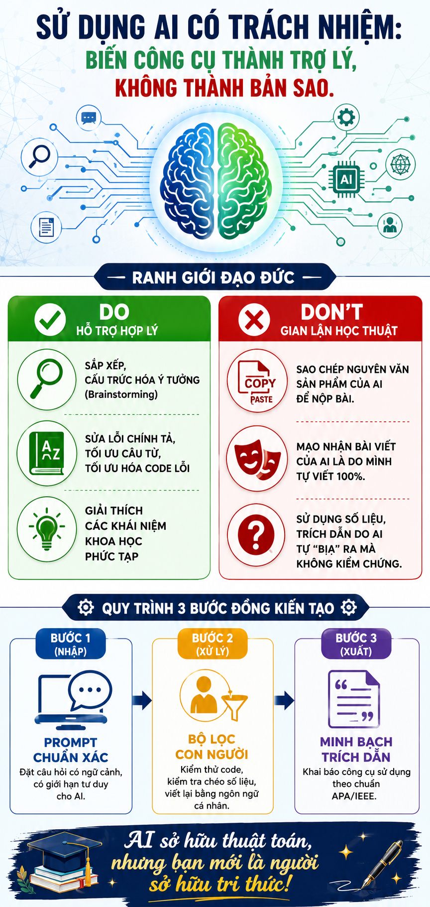
Tôi là người đưa ra ý tưởng cốt lõi & giải pháp; AI chỉ là trợ lý thực thi, không phải kiến trúc sư.
Luôn giả định AI có thể sai (hallucination); kiểm tra chéo với sách/tài liệu chính thống hoặc chạy thử trước khi dùng.
Khai báo trung thực công cụ AI đã dùng, đính kèm prompt log khi được yêu cầu.
Không dùng nhận định mơ hồ của AI; tự tìm bài báo gốc để trích dẫn đúng tác giả.
Không tải dữ liệu cá nhân/tài sản trí tuệ tập thể/đề tài chưa công bố lên AI công cộng.
Dùng AI để hiểu sâu bản chất, tuyệt đối không để né tránh tư duy hay làm bài hời hợt.
Ranh giới hỗ trợ – gian lận nằm ở “chủ thể tư duy”: dùng AI như người phản biện/biên tập là hợp lý; sao chép nguyên văn không kiểm chứng là gian lận. Lạm dụng AI còn tạo “ảo tưởng về năng lực” (illusion of competence), làm suy giảm tư duy phản biện và kỹ năng gỡ lỗi. Đề xuất giải pháp: quy trình 3 bước đồng kiến tạo (Prompt → Bộ lọc con người → Minh bạch trích dẫn), kèm tự kiểm bằng câu hỏi “Tôi có giải thích lại được phần này không?”.
OpenAI. (2026). ChatGPT (Phiên bản GPT-4o) [Mô hình ngôn ngữ lớn]. Hỗ trợ cấu trúc hoá bài toán so sánh giải thuật tìm đường. Truy cập 17/05/2026, từ https://chat.openai.com.